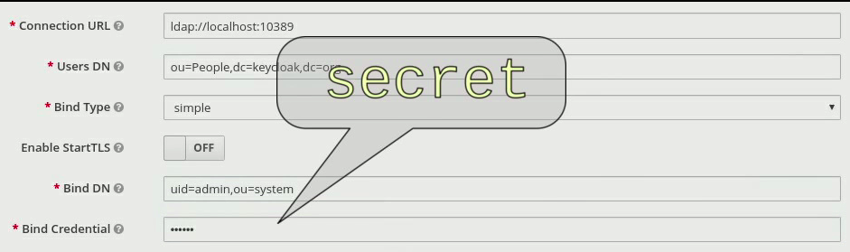
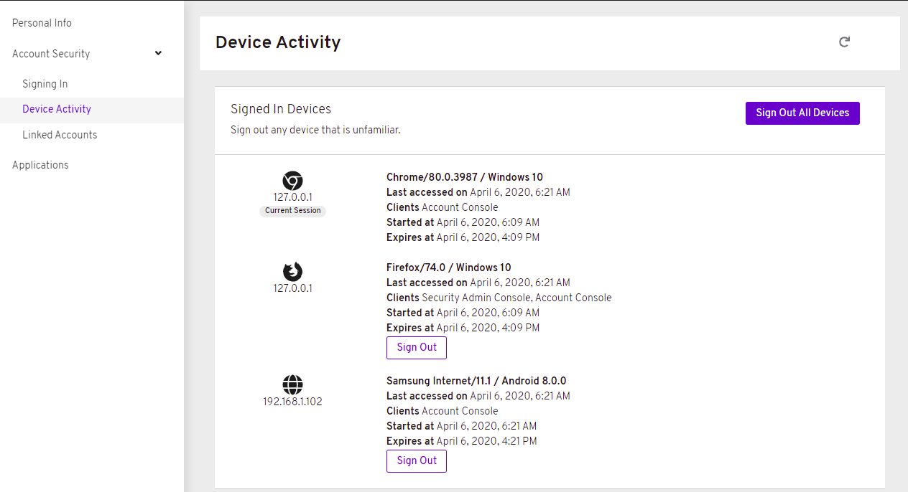

Release Notes
For Use with Red Hat Single Sign-On 7.4
Abstract
Making open source more inclusive
Red Hat is committed to replacing problematic language in our code, documentation, and web properties. We are beginning with these four terms: master, slave, blacklist, and whitelist. Because of the enormity of this endeavor, these changes will be implemented gradually over several upcoming releases. For more details, see our CTO Chris Wright’s message.
Chapter 1. Red Hat Single Sign-On 7.4.0.GA
1.1. Overview
Red Hat is proud to announce the release of version 7.4 of Red Hat Single Sign-On (RH-SSO). RH-SSO is based on the Keycloak project, and enables you to secure your web applications by providing Web SSO capabilities based on popular standards such as OpenID Connect, OAuth 2.0, and SAML 2.0. The RH-SSO server acts as an OpenID Connect or SAML-based identity provider (IdP), allowing your enterprise user directory or third-party IdP to secure your applications via standards-based security tokens.
Red Hat Single Sign-On for IBM Z and IBM Power Systems is supported only in the OpenShift environment. Bare metal installations on IBM Z and IBM Power Systems are not supported.
The following notes apply to the RH-SSO 7.4 release.
1.2. New or improved features
1.2.1. Authentication improvements
RH-SSO now offers support for W3C Web Authentication (WebAuthn). Adding support for WebAuthn resulted in more refactoring in the Authentication flows configuration and in the credentials management. This change provides more flexibility for administrators when configuring authentication flows and more flexibility for users when selecting the preferred authentication mechanism.
The improvements for authentication and credentials management have multiple benefits.
1.2.1.1. Two-factor authentication
It is now easier for the administrator to configure two-factor authentication and select between multiple alternatives for two-factor authentication. For example, an administrator can configure OTP and WebAuthn as alternatives in the authentication flow, which allows users to choose between those mechanisms during authentication.
1.2.1.2. Passwordless authentication
It is easier for the administrator to configure passwordless authentication. This feature can be useful for WebAuthn, which can be used as a two-factor authentication mechanism and a passwordless authentication mechanism. In the case of passwordless, a user who authenticates with WebAuth is not required to provide a password during authentication. It is easier to combine passwordless and two-factor authentication.
1.2.1.3. Identity-first authentication
An administrator can configure an authentication flow in a way that users provide only a username on the first form during authentication. This change allows better flexibility as RH-SSO can better detect what is the preferred authentication mechanism for target users and show authentication forms based on that.
1.2.1.4. Conditional authenticators
RH-SSO offers the possibility to add conditions at specific places of the authentication flow. Therefore, a user is required to authenticate with an authentication mechanism just if the specified condition is met. This means that for example two-factor authentication will be required for members of a specific role. Another example is that the two-factor authentication mechanism will be required for users with a configured two-factor credential.
1.2.1.5. Change to OPTIONAL authentication execution requirement
Adding conditional authenticators allowed us to remove the OPTIONAL requirement for the authentication executions. Conditional authenticators are more flexible and allow for support of everything that was previously allowed with the OPTIONAL authentication execution requirement. If you use the OPTIONAL authentication execution, your authentication flows are migrated automatically.
See the Upgrading Guide for more details.
1.2.1.6. Credentials management
The format of the stored user credentials in the RH-SSO database was changed. Also every user can have multiple credentials of the same type, such as multiple OTP credentials or multiple WebAuthn credentials. During authentication, users can choose which credential will be used and which authentication mechanism will be used.
Administrators can see all credentials of a particular user and some public metadata associated with target credentials. For example, the administrator can see which hashing algorithm was used to hash the user password. Administrators can delete some user credentials or change the priority of some credentials, so that they will become preferred for the target user.
1.2.1.7. Credentials management for users
Users can see all their credentials in the Account Console and add or delete credentials. See the section on the New Account Console, which is a Technology Preview feature. The currently supported account console, the User Account Service, does not support this feature. It supports OTP in a similar way to the previous RH-SSO version.
See authentication flow in the Server Administration Guide for more details.
1.2.2. Vaults for secrets
For this release, RH-SSO adds a vault for storing and retrieving secrets. The vault provides secure, automated access to secrets to eliminate any storage of clear text values. By using a vault, the database contains the reference to the vault entry rather than the actual secret. Also, the use of a vault offloads managing secrets from the RH-SSO administrator to a vault administrator.
Several configuration fields can obtain their value from an external vault instead of requiring the user to enter the value directly. The fields are the LDAP bind password, SMTP password, and identity provider secrets.

RH-SSO provides the ability to read secrets from OpenShift secrets, an Elytron credential store, or a custom vault.
1.2.2.1. OpenShift vault
RH-SSO supports the vault implementation for OpenShift secrets. These secrets can be mounted as data volumes, and they appear as a directory with a flat file structure, where each secret is represented by a file whose name is the secret name, and content of that file is the secret value.
1.2.2.2. Elytron credential store
RH-SSO includes a new built-in vault provider that reads secrets from a keystore-backed Elytron credential store. The creation and management of the credential store is handled by Elytron using either the Elytron subsystem or the elytron-tool.sh script.
1.2.2.3. Custom vault
A vault SPI has been introduced to enable development of extensions to access secrets from custom vaults.
See the Server Administration Guide and the Server Developer Guide for more details.
1.2.3. WebAuthn (Preview)
RH-SSO provides limited support for W3C Web Authentication (WebAuthn). It works as a WebAuthn’s Relying Party (RP).
When WebAuthn is enabled, the administrator is allowed to configure the WebAuthn policy, which allows the administrator to limit what WebAuth authenticator devices can be used and what is the required attestation for them. Administrators can configure different settings for the WebAuthn two-factor authenticator or WebAuthn passwordless authentication. The administrator is allowed to require specific users to configure the WebAuthn credential and/or configure the authentication flow in a way that WebAuth authentication is required for all users or allowed as two-factor mechanism and others. There is a lot of flexibility here as described above in the Authentication Improvement section of these Release Notes.
WebAuthn is Technology Preview and is not fully supported. This feature is disabled by default. The success of this feature depends on a user’s WebAuthn supporting authenticator, browser, and platform. If you use this WebAuthn support, please clarify to what extent those entities support the WebAuthn specification.
Users can manage their WebAuthn credential only in the New Account Console as described in the next section.
1.2.4. New Account Console (Preview)
The User Account Service is being significantly improved as a new Account Console on a Technology Preview basis. The existing User Account Service is still supported.
To experiment in using this console,
Start the RH-SSO server with the system properties to enable new Account Console and the new Account REST API:
standalone -Dkeycloak.profile.feature.account_api=enabled -Dkeycloak.profile.feature.account2=enabled
- Log into the Admin Console.
- Select Realm Settings, Themes.
- Change the Account Theme to rhsso-preview.
When you go to Manage Account, you will see the new Account Console. Here is a sample screen:

This new console is based on React and PatternFly 4. It allows you to use PatternFly CSS variables for easy styling. It also allows you to remove pages and add your own pages. Full documentation will be provided at a future release.
1.2.5. New default hostname provider
This new default hostname provider adds the following improvements:
- No need to change provider to a set fixed base URL
- Support of a different base URL for frontend and backend requests
- Support for changing context-path when RH-SSO is exposed on a different context-path through a reverse proxy
1.2.6. Additional improvements
RH-SSO includes additional minor features at this release. Most of those features improve support for advanced OpenID Connect/OAuth2 concepts and algorithms, which is related to support of Financial-grade API (FAPI). RH-SSO does not yet fully support FAPI, but the following changes move in that direction.
- MP-JWT Client Scope, making it easy to issue tokens following the Eclipse MicroProfile specification.
- More algorithms supported for client authentication with signed client secret JWT. Namely HS384 and HS512 algorithms were added to an already existing HS256 algorithm.
- Client authentication for OIDC identity brokering with signed JWT or basic authentication. All client authentication methods in the OIDC specification are supported.
- Identity brokering changes to make it easier to disable auto-creation of RH-SSO users during the first login of a particular user with an identity provider. See disabling automatic user creation in the Server Administration Guide for more details.
- Support for additional signing algorithms for client authentication with private key signed JWT.
- Support for additional signing algorithms for client authentication with signed JWT. All supported algorithms are RS256, RS384, RS512, PS256, PS384, PS512, ES256, ES384 and ES512
- PS256 token signature support
- PKCE support for the JavaScript adapter.
- Improved handling of user locale
- Pagination support for clients and roles in admin endpoints/console
1.2.7. Existing technology preview features
The following features continue to be in a Technology Preview status:
- Cross data-center replication
- Token exchange
- Fine-grained authorization permissions
1.2.8. Removed or deprecated features
Two features have a change in status:
- Installation from an RPM is deprecated. Red Hat Single Sign-On will continue to deliver RPMs for the life of the 7.x product, but will not deliver RPMs with the next major version. The product will continue to support installation from a ZIP file and installation on OpenShift.
- Authorization Services Drools Policy has been removed
- Upload of scripts through admin rest endpoints/console is deprecated. It will be removed at a future release.
1.3. Fixed Issues
More than 1100 issues were fixed during this release. For details on the fixed issues, see https://issues.redhat.com/issues/?filter=12346377.
1.4. Known issues
This release includes the following known issues:
- KEYCLOAK-13589 - Can’t add user in admin console when 'Email as username' is enabled
- KEYCLOAK-13635 - Cannot create mappers which require certain characters like $
- KEYCLOAK-13668 - Group-Based Policy not working for new clients
- KEYCLOAK-13581 - Client pagination with reduced permissions results in an empty response
1.5. Supported configurations
The set of supported features and configurations for RH-SSO Server 7.4 is available on the Customer Portal.
1.6. Component versions
The list of supported component versions for RH-SSO 7.4 is available on the Customer Portal.
1.7. Red Hat Single Sign-On metering labels for Red Hat OpenShift
You can add metering labels to your Red Hat Single Sign-On pods and check Red Hat subscription details with the OpenShift Metering Operator.
Do not add metering labels to any pods that an operator deploys and manages.
Red Hat Single Sign-On can use the following metering labels:
-
com.redhat.component-name: Red Hat Single Sign-On -
com.redhat.component-type: application -
com.redhat.component-version: 7.4 -
com.redhat.product-name: "Red_Hat_Runtimes" -
com.redhat.product-version: 2020/Q2
Additional resources